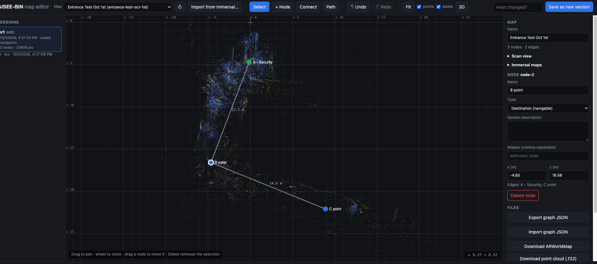

AISEE-BIN: Flower Dome progress
Status update for the team · 1 October 2026 · Gardens by the Bay, Flower Dome POC
The goal: guide blind and low-vision visitors along the Flower Dome tour (Point A, through Doors B and C, to Points 1–4) with spoken directions. Guidance comes from a phone or from AiSee glasses.
| iPhone app (TestFlight) | Ready: navigation, scanning (Author mode) and on-site test tools. |
| Android app for the glasses | Ready as a test build. Smooth glasses video, and positioning works in a test room. |
| Web map editor | Live at aiseebin.flowsxr.com. Anyone on the team can edit routes, stops and spoken text. |
| Phone navigation at the Flower Dome | Worked to Points 1–3 on 1 October. The entrance (A, B, C) needs a better map. |
| Glasses at the Flower Dome | Not tested on site yet. Planned for 16 October, with Prasanth in Singapore. |
| A · Our app scans (ARKit) | B · Immersal scans, our app guides | |
|---|---|---|
| How a map is made | Open Author mode, name the place, walk the route, mark each stop, then Publish. The route comes out of the walk itself. | Scan with the Immersal Mapper app. Then Import from Immersal in our editor and draw the route and stops on top of the scan. |
| How it finds you | The phone recognises the place from its saved world map (about 26 MB for the Flower Dome walk). It then tracks every step. | A camera frame is matched against the Immersal map and gives a position fix. Between fixes, the phone tracks with ARKit and the glasses count steps. |
| Devices | iPhone only. | iPhone, Android and AiSee glasses. |
| Strengths |
|
|
| Weaknesses |
|
|
Immersal gives an occasional, absolute "you are here", and ARKit gives smooth, step-by-step tracking that drifts slowly. Together they give the strengths of both. Today the phone already uses ARKit between Immersal fixes. Three next steps:
With Immersal maps, a camera frame can be matched by Immersal's server or by the phone itself. The app has a switch with three settings: Auto, On phone and Immersal server.
| Online (Immersal server) | On the device | |
|---|---|---|
| Pros |
|
|
| Cons |
|
|
| Best for | Phones with good mobile data. | The glasses, and places with poor signal. Ideally one map per area. |

Our tester, on an iPhone 13 Pro Max, with the TestFlight app and remote support. Her logs and published maps reached our server, so we could follow along from overseas.
| Test | What happened | Result |
|---|---|---|
| Five Immersal scans as one map last week's scans, lined up by hand |
She walked to link the scans, marked the tour points, then checked them. Linking timed out at first on mobile data. | Not usable yet. Checks were 13–47 m off. The linking walk gave a better fit, but it still disagrees with her marked points. |
| Way A: "Flower Dome 1 Oct" about 108 m, Point A to Point 3 |
Published after a couple of failed uploads. She then navigated to Points 1, 2 and 3 and back. | Worked well inside the dome. Each announcement came just before its point. It had trouble finding her at A, B and C. |
| Way A: "map 2" the actual priority-lane route |
Retested later, as it was getting darker. | Stuck on "Relocalizing" at the entrance. Likely causes are the change in light and the barrier graphics. |
| Way B: "Entrance Test Oct 1st" Immersal entrance scan, A, B and C placed by eye |
Loaded on the phone at the entrance. | Found her immediately, at roughly the right place. The points are only rough because they were placed by eye. |


The glasses have no ARKit, so they rely on Immersal maps (Way B). The phone stays in a pocket and does the work.
| When | What we found |
|---|---|
| 16 Sep · iPhone | Immersal recognises the AiSee glasses' camera picture. We worked out the camera's lens setting (about a 60° view). |
| 24 Sep · iPhone | First walking test with the glasses. Few fixes came through (3 in 474 tries), so this needs work. |
| 29 Sep · iPhone | New glasses software from the vendor. The camera preview lag turned out to be on our side; with that fixed, the video is now smooth. |
| 29–30 Sep · Android | A glasses-only Android app on a Huawei Nova 5T, a phone without ARCore. In a test room: 25 fixes in 168 tries, about 0.3 s each, all on the phone. Spoken announcements while walking, and a live map. |
| 16 Oct · on site | First glasses test in the Flower Dome, with Prasanth in Singapore, using the Immersal map of the route. Controls: tap the temple to talk, double-tap for "where am I", triple-tap to stop. |
| When | What |
|---|---|
| 2 Oct | Yvonne makes one Immersal scan of the whole route within the 500-photo limit, split by area (100+ photos at the entrance), in daylight. She also sends a screen recording and test results; we add them to this report. |
| Before 16 Oct |
|
| 16 Oct | On site in Singapore: glasses and phone test of the full tour. |
| What | Link | Notes |
|---|---|---|
| iPhone app (TestFlight) | testflight.apple.com/join/7uVqcqkE | Install TestFlight first, then open the link. Build 10. |
| Android app (glasses only) | AISEE-BIN-android-0.1.1.apk release page: releases/tag/android-v0.1.1 | Needs access to the GitHub repo. Allow "install unknown apps" on the phone. |
| Web map editor | aiseebin.flowsxr.com | Every save becomes a new version, so edits can always be undone. |
| Code and documents | github.com/prasanthsasikumar/AISEE-BIN | Private repo: ask Prasanth for access. Reports are in docs/reports/. |
| Immersal developer portal | developers.immersal.com | Where our Immersal maps are listed and managed (Pro account). |
| Immersal Mapper (scanning app) | App Store: Immersal Mapper | Sign in with our Immersal Pro account, so the app can use the scans. |
| On-site tester guide | docs/reports/2026-10-01-field-test-guide | Step-by-step guide to the Field Test tools. |